Сайт, що продає бетон
Розбираємо кожен блок нового сайту ПроБетон: що це, чому зроблено саме так і як він перетворює відвідувача на заявку.
Відео · запис екрана
Сайт у русі
Анімації, кнопки, віконце дзвінка й усі сторінки — так сайт бачить відвідувач
Розділи відео
Логіка сайту
Сайт — це шлях покупця
Кожен блок веде людину на один крок ближче до заявки
Головна сторінка збудована не як вітрина, а як розмова з покупцем. Спочатку він бачить, що ви продаєте, потім — чому вам можна довіряти, далі обирає товар, рахує обсяг і лише тоді залишає заявку. Кожен блок цієї презентації відповідає за свій крок.
Чотири правила, на яких тримається сайт
Ціни з прайсу на картках, в акціях і в калькуляторі — без «ціну уточнюйте» скрізь.
Кнопка, дзвінок або калькулятор: людина ніде не «застрягає».
Бетон, бруківка, ЗБВ, техніка — кожна шукається окремо.
Усе перевірено на телефоні: меню, каталог, кнопки дзвінка.
Блок 01 · Головна · перший екран
Перший екран
Три напрями й заявка — без прокрутки
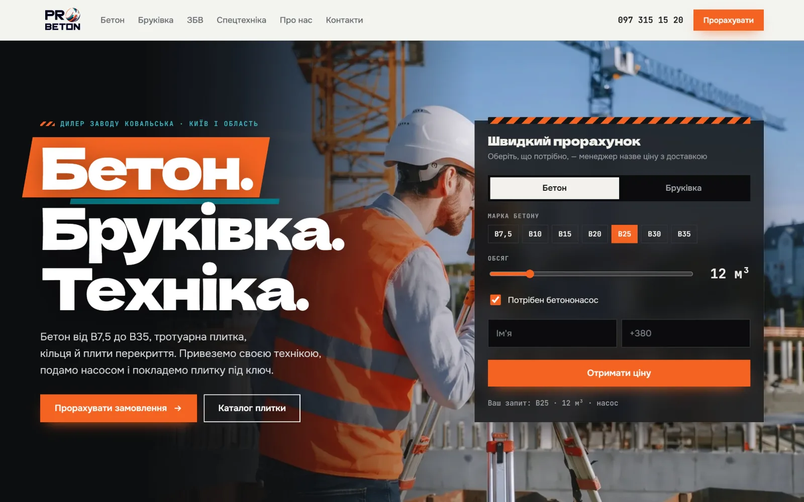
Як продає
Заявку можна залишити, не прокручуючи сторінку: марка, обсяг, насос, телефон. Чим менше кроків до заявки, тим менше людей іде до конкурента.
Що це
Перше, що бачить людина: «Бетон. Бруківка. Техніка.» великим шрифтом і картка «Швидкий прорахунок» поруч.
Чому саме так
Помаранчева плашка по черзі перебігає з «Бетону» на «Бруківку» й «Техніку» — за кілька секунд видно все, що ви продаєте, і починається з бетону, головного продукту. Фото інженера з приладом — живий будмайданчик, а не стокова картинка.
Блоки 02–03 · головна
Стрічка, цифри й партнери
Асортимент, масштаб і довіра — одразу під першим екраном
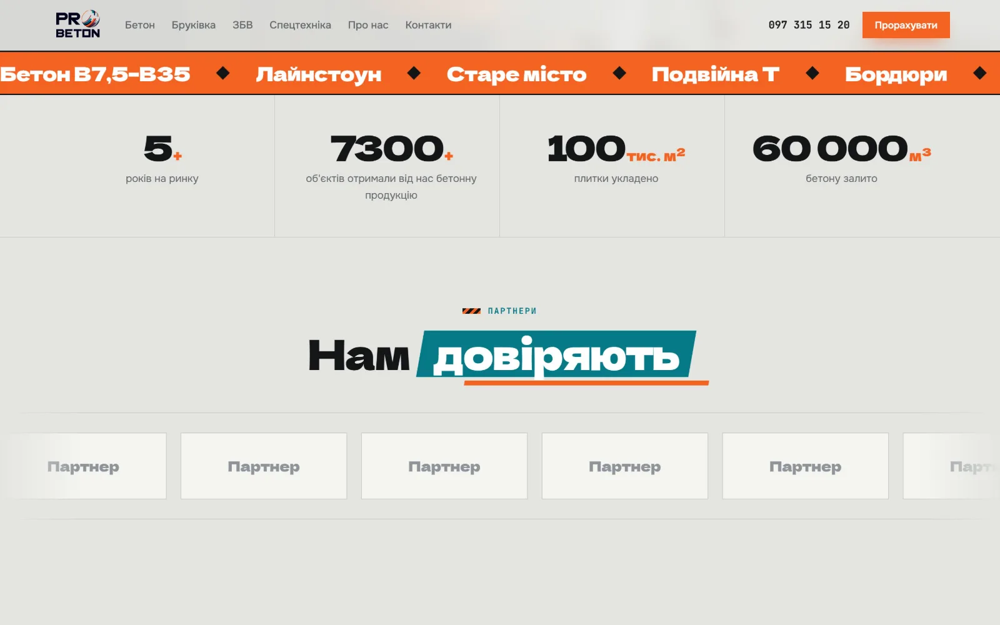
Як продає · цифри
Великі цифри знімають головне питання нового клієнта: «а ви взагалі надійні?». Оптовик бачить масштаб ще до того, як почне читати.
Як продає · партнери
Забудовник довіряє тому, кому вже довіряють інші забудовники. Одна знайома назва переконує сильніше за будь-який текст про якість.
Блок 02 · Головна · стрічка й цифри
Стрічка й цифри
Що це
Помаранчева стрічка з асортиментом і чотири цифри з вашого сайту: 5+ років, 7300+ об'єктів, 100 тис. м² плитки, 60 000 м³ бетону.
Чому саме так
Стрічка показує все — від бетону до крана-маніпулятора — не займаючи місця. Цифри «набігають», коли блок з'являється на екрані: рух притягує погляд саме туди, де докази.
Блок 03 · Головна · довіра
Нам довіряють
Що це
Стрічка з назвами компаній, які вже працюють з ПроБетон.
Чому саме так
Зараз тут заглушки «Партнер» — назви й логотипи додамо з брифу. Стрічка рухається повільно, щоб назви встигали прочитати, і зупиняється при наведенні.
Блок 04 · Головна · бетон
Бетон
Головний продукт — одразу після довіри
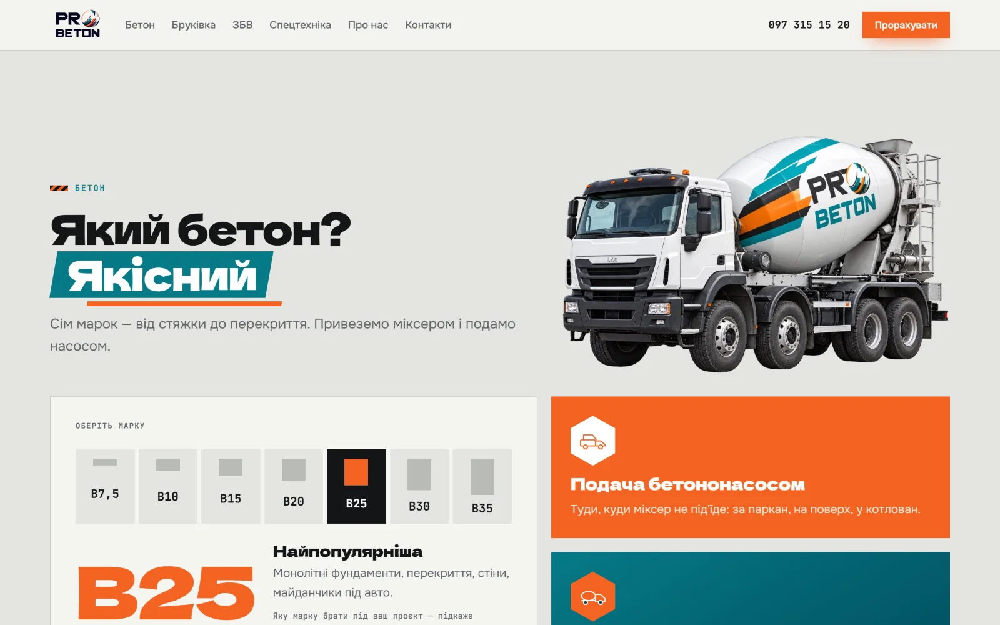
Як продає
Людина, яка розібралася в марці, вже майже готова замовити: кнопка «Прорахувати В25» веде в калькулятор з цією маркою. Машина з логотипом запам'ятовується й показує: техніка своя.
Що це
Шкала з семи марок В7,5–В35: натискаєш марку — бачиш, для чого вона. Поруч — подача бетононасосом і доставка міксером. Бетономішалка з вашим логотипом виїжджає на екран.
Чому саме так
Покупець часто не знає, яка марка йому потрібна. Шкала пояснює це простими словами: «фундамент приватного будинку», «перекриття», «майданчики під авто».
Блок 05 · Головна · каталог
Один клік до товару
Двері в потрібний розділ замість прокрутки
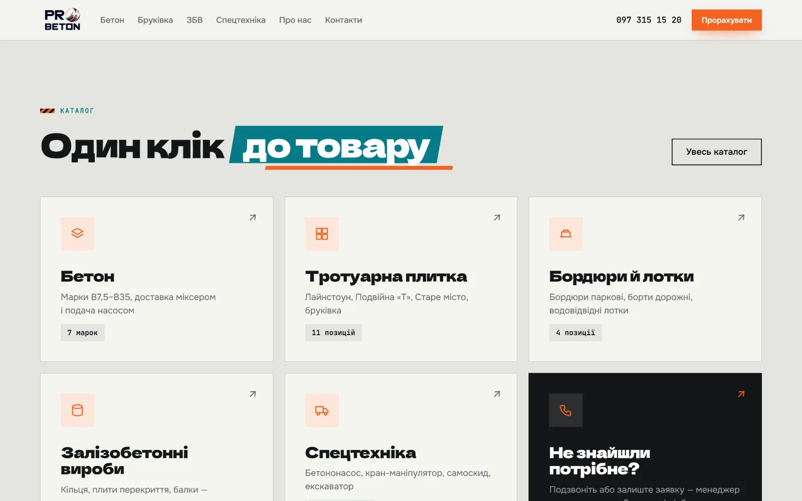
Як продає
Що швидше людина знаходить свій товар, то менше шанс, що вона закриє сайт. Остання картка з телефоном ловить тих, хто не знайшов потрібне.
Що це
Шість карток-входів: бетон, тротуарна плитка, бордюри й лотки, ЗБВ, спецтехніка і «Не знайшли потрібне?».
Чому саме так
Кожен відвідувач приходить по своє. Замість довгої прокрутки — одразу вхід у потрібний розділ, з кількістю позицій на картці.
Блок 06 · Головна · бруківка
Побачите свій двір
Плитку обирають очима
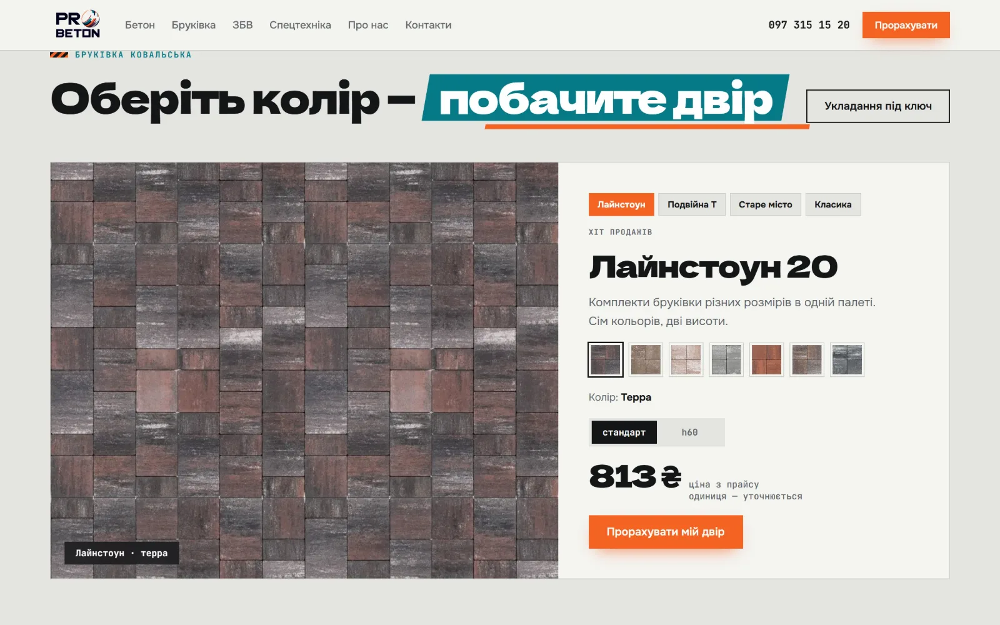
Як продає
Людина «приміряє» плитку до свого двору й затримується на сайті. Кнопка «Прорахувати мій двір» переводить вибір у заявку.
Що це
Обираєте модель — Лайнстоун, Подвійна «Т», Старе місто, класична бруківка — і колір, і бачите викладку в реальному масштабі з ціною з прайсу.
Чому саме так
Фото однієї цеглинки нічого не каже, а викладка на весь квадрат показує, як виглядатиме подвір'я. Фрагменти вирізані з фото каталогу Ковальської — кольори справжні.
Блок 07 · Головна · доставка
Привеземо й вивантажимо
Своя техніка відповідає на питання «а як це привезти?»
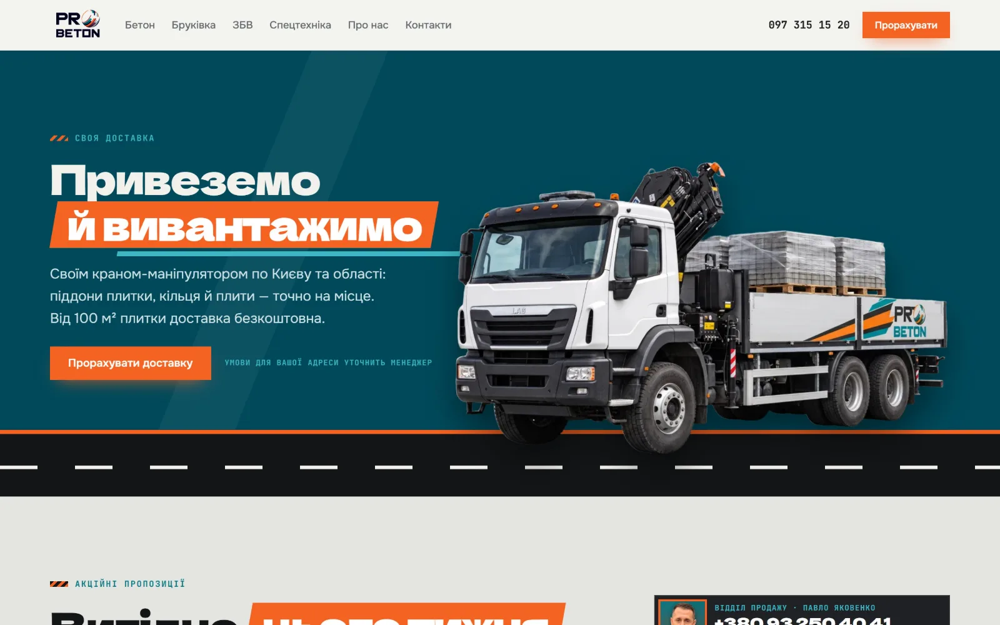
Як продає
Покупець плитки думає не лише про ціну, а й про те, як піддони опиняться в нього у дворі. Блок відповідає на це раніше, ніж він спитає, а кнопка «Прорахувати доставку» веде в калькулятор.
Що це
Петрольний блок з дорогою: кран-маніпулятор з піддонами плитки виїжджає з краю екрана, а за ним на асфальті проступає розмітка. Поруч — доставка по Києву й області та безкоштовна доставка від 100 м².
Чому саме так
Три машини з вашим логотипом — бетономішалка, маніпулятор і навантажувач — рознесені по головній через рівні проміжки. Кожна виїжджає по-своєму й щоразу заново, тож довга сторінка не стає одноманітною.
Блок 08 · Головна · акції
Вигідно цього тижня
Причина купити зараз, а не потім
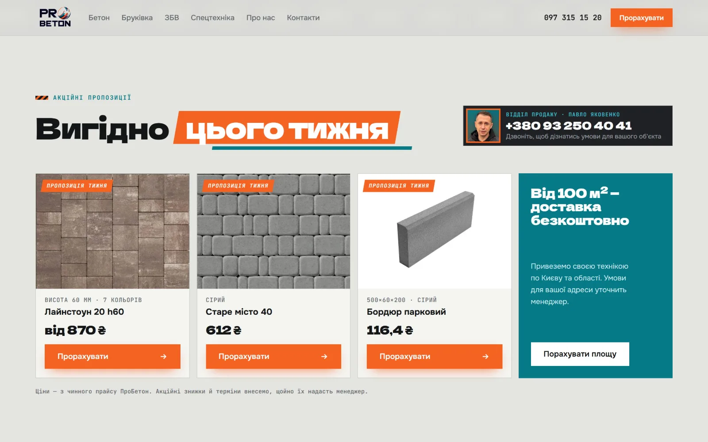
Як продає
Акція дає причину купити зараз. Безкоштовна доставка від 100 м² підштовхує брати більший обсяг. Прямий номер — найкоротший шлях від ціни до дзвінка.
Що це
Пропозиції тижня з цінами з прайсу, картка «Від 100 м² — доставка безкоштовно» і менеджер Павло з фото й прямим номером.
Чому саме так
Акції стоять високо, бо ціна — одне з перших питань. Живе обличчя менеджера поруч прибирає відчуття безликого магазину.
Блок 09 · Головна · переваги
Якісно. Вчасно. Під ключ.
Позиціонування й шість фактів
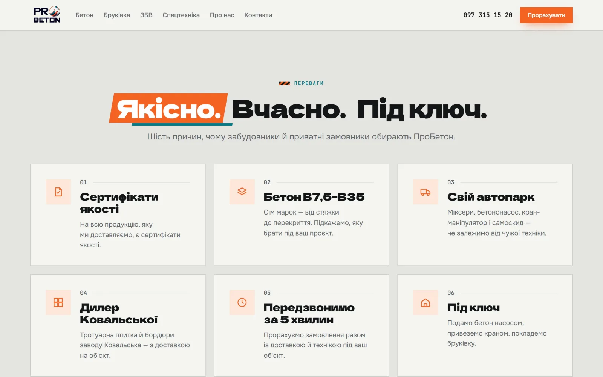
Як продає
Оптовик порівнює постачальників за якістю, вчасністю й зручністю. Цей блок відповідає на всі три питання одразу.
Що це
Три слова позиціонування — плашка по черзі виділяє кожне — і шість конкретних причин: сертифікати, марки В7,5–В35, свій автопарк, дилер Ковальської, дзвінок за 5 хвилин, під ключ.
Чому саме так
Під гаслом — факти, а не загальні фрази «ми найкращі». Картки при наведенні стають помаранчевими й «оживають».
Блок 10 · Головна · спецтехніка
Спецтехніка на ваш об'єкт
Другий напрям бізнесу — прямо на головній
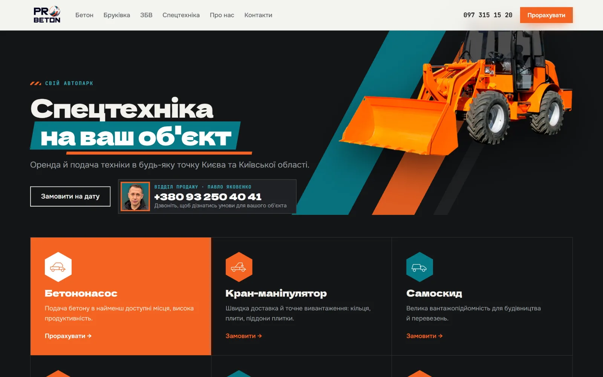
Як продає
Хто прийшов по бетон, бачить, що насос і кран можна взяти там само, — замовлення стає більшим. Кнопка «Замовити на дату» й номер менеджера ведуть одразу в розмову.
Що це
Навантажувач виїжджає на екран на тлі помаранчево-бірюзових смуг. Нижче — шість карток: бетононасос, кран-маніпулятор, самоскид, екскаватор і гідромолот, доставка ЗБВ, укладання плитки. Поруч — менеджер з прямим номером.
Чому саме так
Оренда техніки — окреме джерело заявок, тому вона не схована на внутрішній сторінці. Темний блок з рухом розбиває світлу частину сторінки й повертає увагу тим, хто вже почав гортати швидко.
Блок 11 · Головна · калькулятор
Калькулятор і відповіді
Людина рахує сама — менеджер отримує готовий запит
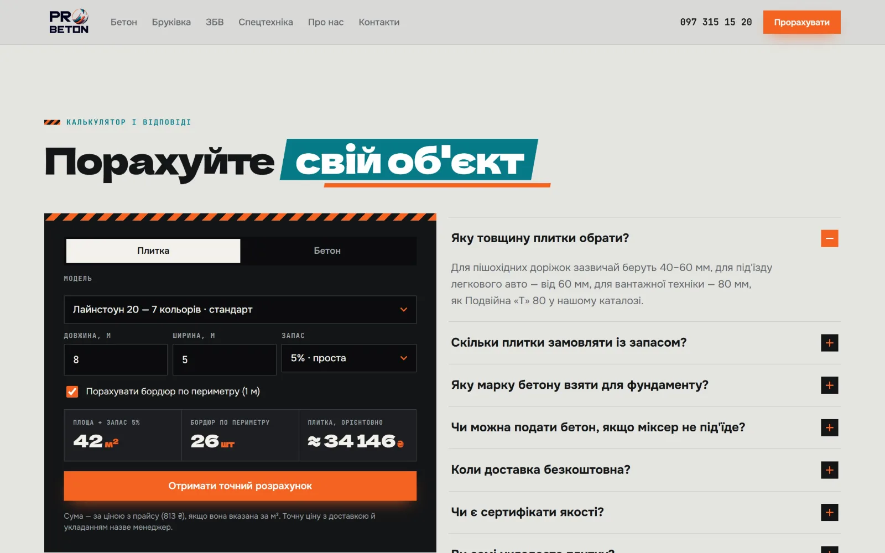
Як продає
Порахований обсяг сам потрапляє в заявку. Менеджер отримує конкретний запит замість «скільки коштує плитка?» і витрачає час на продаж, а не на пояснення.
Що це
Калькулятор плитки й бетону — площа, запас, бордюр, обсяг — і відповіді на часті питання поруч.
Чому саме так
Питання виникають саме під час розрахунку, тому відповіді стоять поряд: яку товщину брати, скільки запасу, яку марку під фундамент.
Блок 12 · Головна · процес
Як ми працюємо
Заявка → прорахунок → доставка → монтаж
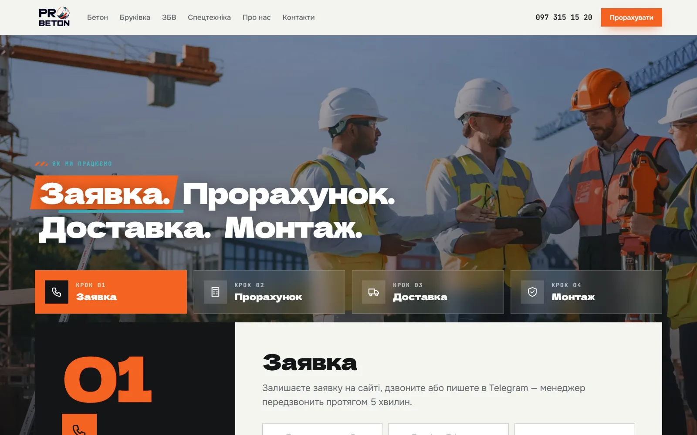
Як продає
Коли зрозуміло, що буде далі, легше зробити перший крок. «Передзвонимо за 5 хвилин» знімає страх «залишу заявку — і ніхто не відповість».
Що це
Чотири кроки, які перемикаються самі; слово в заголовку підсвічується разом з активним кроком. У кожному кроці — що саме входить.
Чому саме так
Новий клієнт боїться невідомого: що буде після дзвінка? Блок показує весь шлях від заявки до готового двору.
Блок 13 · Кожна сторінка · контакти
Контакти й заявка
Внизу кожної сторінки
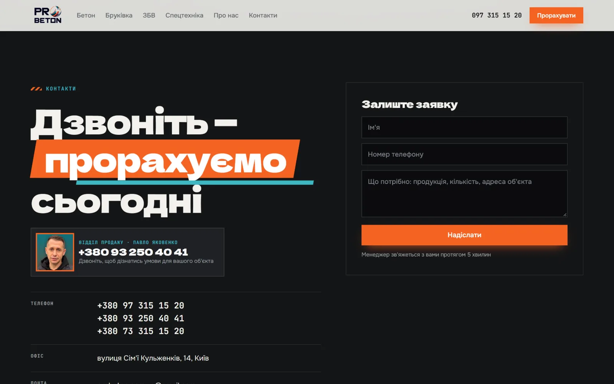
Як продає
Кому зручно дзвонити — дзвонить, кому писати — пише в Telegram чи форму. Більше способів зв'язку — менше втрачених клієнтів.
Що це
Менеджер з фото, усі телефони, офіс, пошта, соцмережі й форма заявки. На сторінці «Контакти» — ще й карта.
Чому саме так
До контактів не треба шукати шлях: вони завершують кожну сторінку. Форма підхоплює розрахунок з калькулятора.
Блок 14 · Увесь сайт · кнопки
Передзвонимо у зручний час
Кнопка дзвінка завжди під рукою
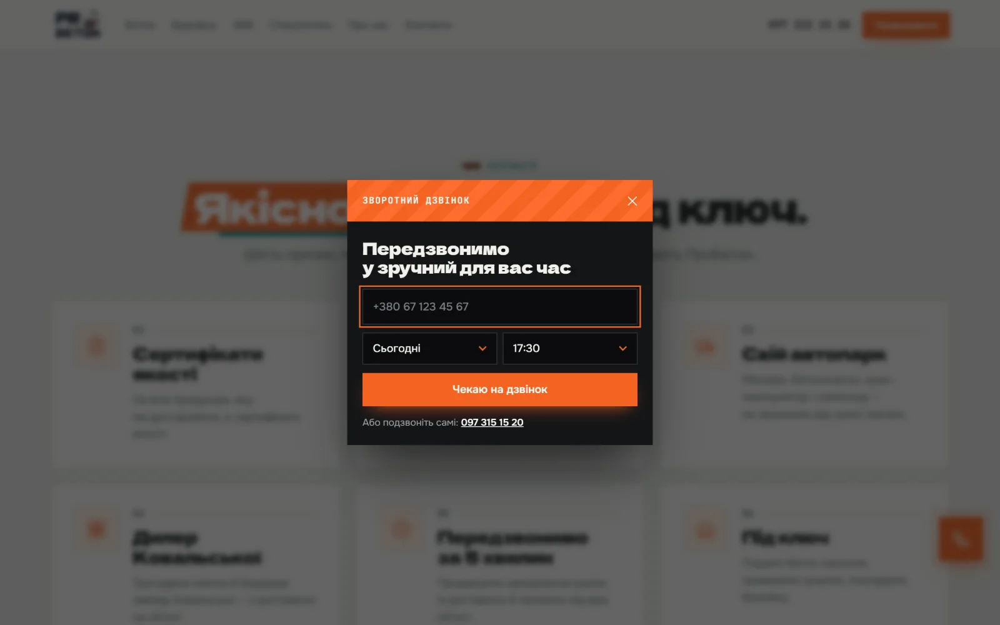
Як продає
Людина, яка сама обрала час, чекає дзвінка й готова говорити — це теплий клієнт, а не холодний обдзвін.
Що це
Кнопка дзвінка видна на кожному екрані: людина обирає день і годину, коли їй зручно говорити. Під нею — кнопка «нагору». На телефоні — панель «Прорахувати · Подзвонити · Telegram».
Чому саме так
Не всі можуть говорити зараз — на об'єкті, за кермом. Вибір часу робить заявку зручною, а не нав'язливою. Один раз за візит віконце пропонує дзвінок саме.
Блок 15 · Сторінка «Бруківка»
Каталог з фільтрами
Як у великих виробників
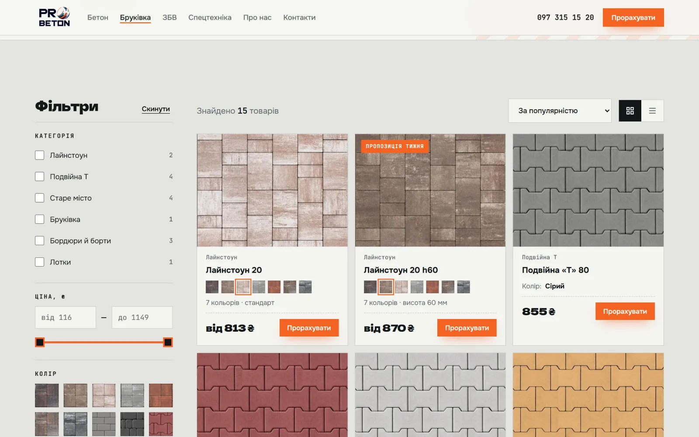
Як продає
Покупець швидко звужує вибір до кількох позицій, і кожна картка має кнопку «Прорахувати». Посилання на підбірку зручно відправити замовнику чи бригаді.
Що це
Окрема сторінка «Тротуарна плитка та бруківка»: фільтри за категорією, ціною й кольором, сортування, вигляд плиткою чи списком. Квадратики кольорів у картці перемикають фото плитки.
Чому саме так
Кольори показані справжньою плиткою, а не кружечками. Вибрані фільтри зберігаються в посиланні — підбірку можна переслати.
Блок 16 · Структура сайту
Сім окремих сторінок
Більше входів з Google без оплати реклами
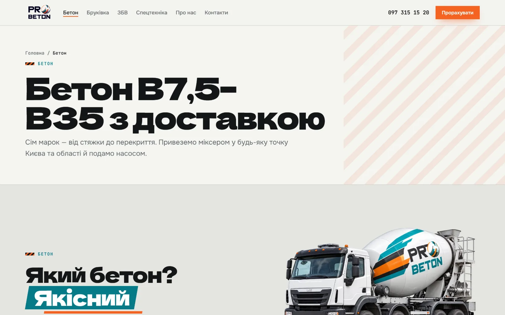
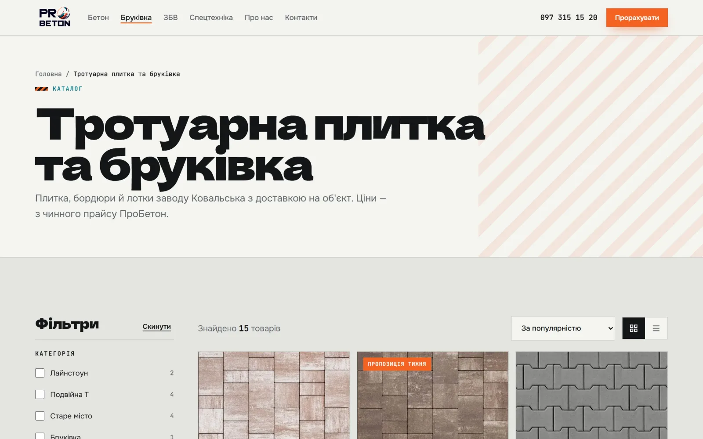
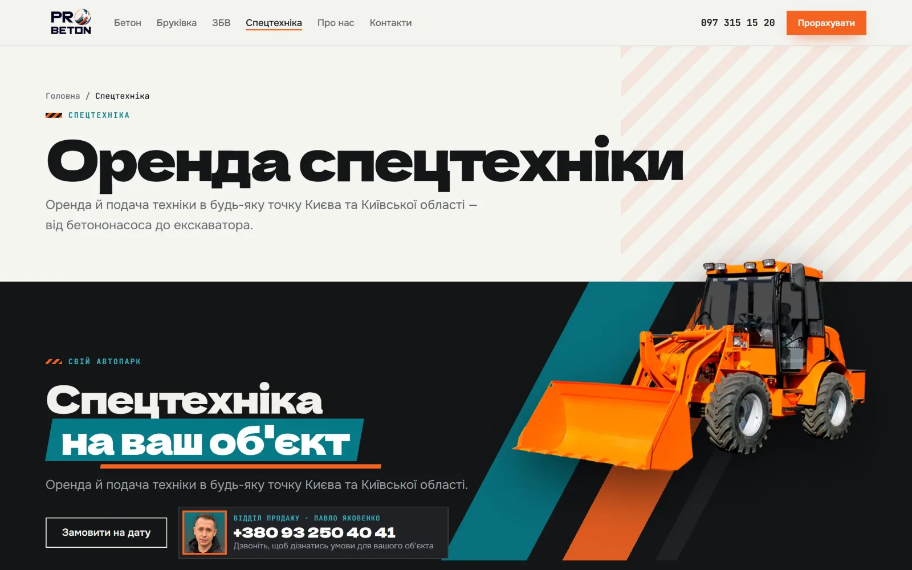
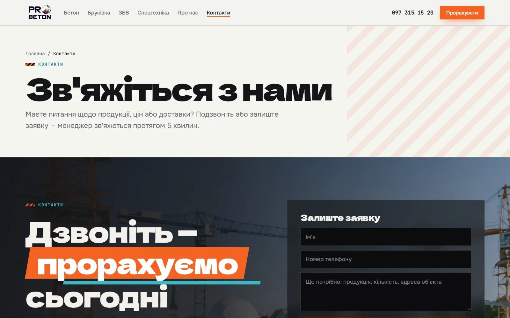
Як продає
Кожна сторінка — окремий вхід з пошуку, і кожна закінчується заявкою. Такий сайт легше просувати рекламою й SEO далі.
Що це
Головна, Бетон, Бруківка, ЗБВ, Спецтехніка, Про нас, Контакти — у кожної свій заголовок і опис для пошуку.
Чому саме так
Google показує сторінки, а не сайти. Сторінка «Бетон В7,5–В35 з доставкою» має шанс з'явитися на запит про бетон з доставкою, сторінка техніки — на запит про оренду бетононасоса.
Блок 17 · Телефон
Мобільна версія
Постачальника часто шукають просто на об'єкті
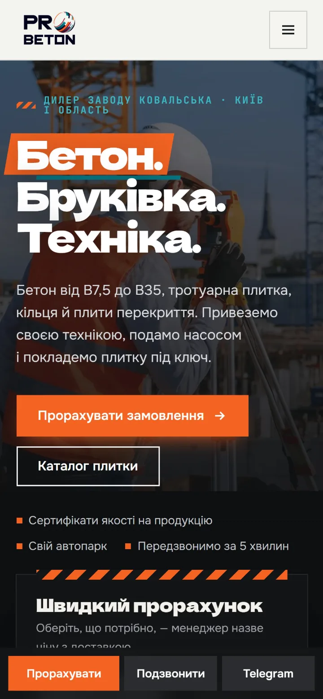
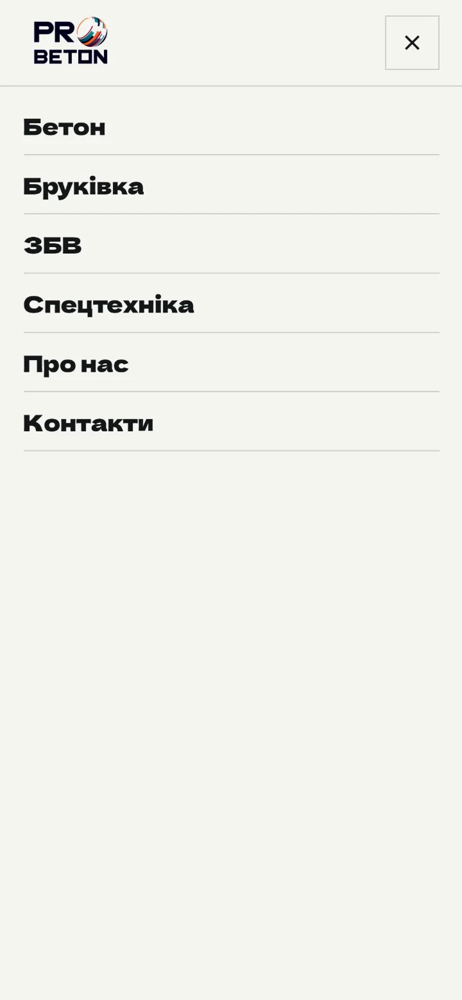
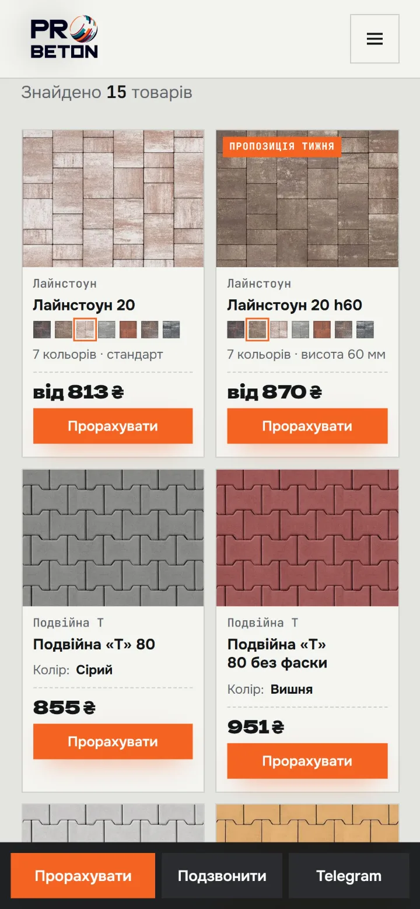
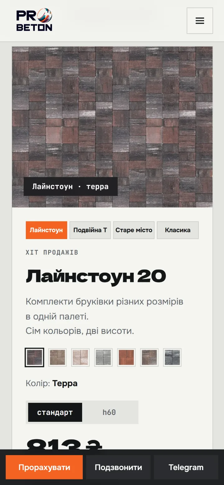
Що це
Сайт перебудовується під телефон: меню на весь екран, по дві картки товарів у ряд, кроки — стрілками, двір — в одну колонку.
Чому саме так
Усе, що працює на комп'ютері, працює й на телефоні — без обрізаних текстів і горизонтальної прокрутки.
Як продає
Кнопки «Подзвонити» й «Telegram» завжди під пальцем. Від знайденого сайту до дзвінка — один дотик.
Швидкість і пошук
Відкривається швидко, знаходиться легко
Перевірено на повільному мобільному інтернеті й слабкому телефоні — як у клієнта на об'єкті
Головна: перший екран на мобільному інтернеті
Головна: скільки вантажиться до прокрутки
Каталог плитки: повне завантаження
Кожна сторінка названа так, як люди шукають: «купити бетон у Києві з доставкою», «тротуарна плитка Ковальська», «оренда бетононасоса».
Google бачить компанію, адресу, телефони, послуги й відповіді на питання — і може показати їх прямо у видачі.
Окремий файл-довідка llms.txt: ChatGPT, Gemini, Perplexity і Claude беруть з нього факти, коли радять, де купити бетон.
У Telegram, Viber і Facebook посилання на сайт приходить з картинкою, назвою й описом, а не голою адресою.
Пропозиція
Вартість і запуск
Сайт уже зібраний і працює як демо — після брифу наповнюємо його вашими даними
Сайт + фірмовий стиль
Сім сторінок, каталог з фільтрами, калькулятор, двір, акції, питання, мобільна версія, перенесення домену. Брендбук і шаблони.
Підтримка
Оновлення цін і акцій, нові об'єкти, аналітика заявок щомісяця.
Далі — реклама
Таргет в Instagram і Facebook, реклама в Google, контент для соцмереж — коли сайт почне збирати заявки.
Від брифу до запуску
Що потрібно від вас